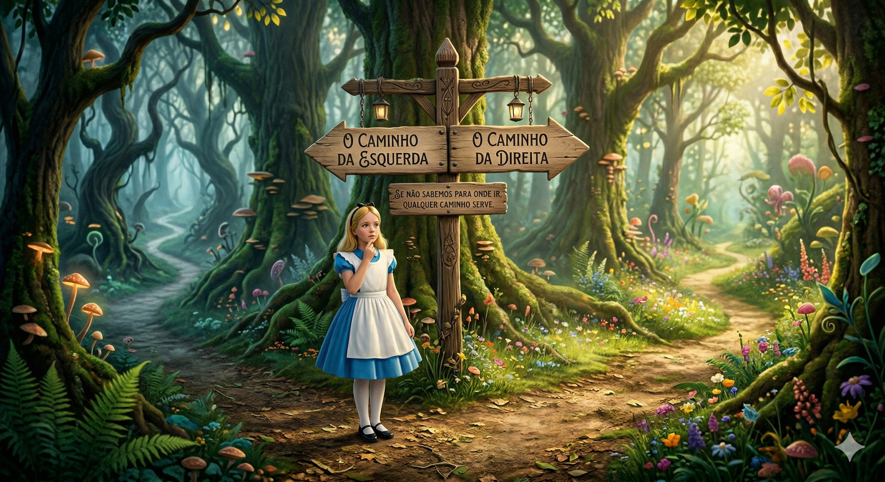
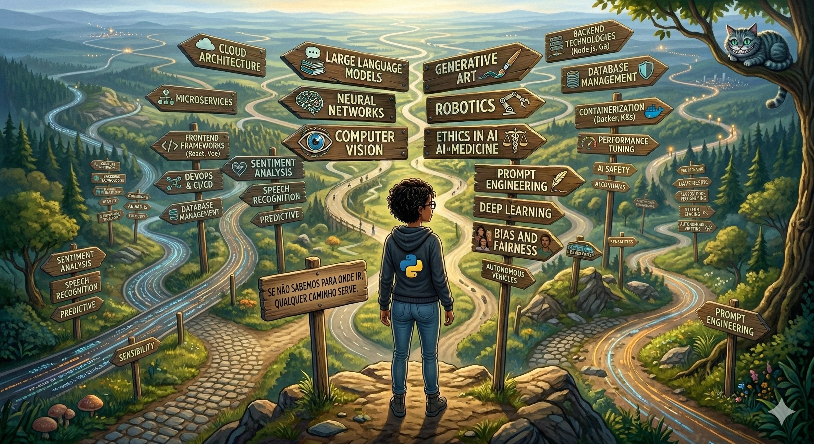

"Para quem não sabe para onde vai, qualquer caminho serve."
De quem é a frase?
(Gato de Cheshire - Alice no País das Maravilhas)
Clique para avançar...
O Valor dos Dados
Além das Planilhas
Até que ponto é viável gerenciar a organização através do Excel?
- O Ativo Principal: Arquitetura dos dados.
- Dados e I.A.: Sem estrutura, não há IA.
Segurança
Compliance e Ética
Proteção de ativos intelectuais.
- Risco: Exposição de código.
- Dados Sensíveis: Vazamento via prompts.
Treinamento
Humano vs. IA
Conhecimento empírico vs. modelos preditivos.
- Sazonalidade: Padrões rápidos.
- Intuição: Sinais vs. estatística.
Próximas Aulas
Storytelling
- Semana 2: Engenharia de Prompts.
- Laboratório: Prática Vertex AI.